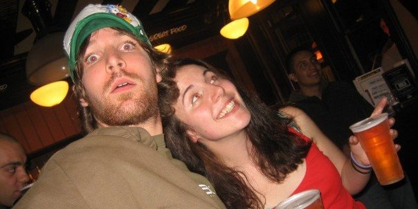
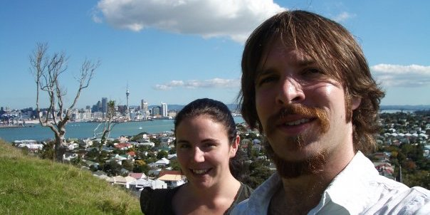
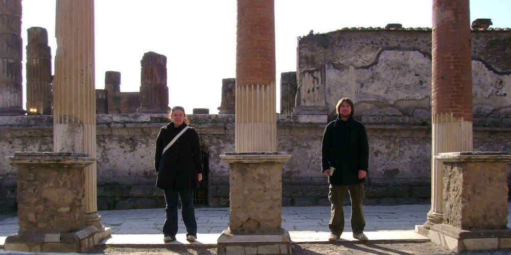
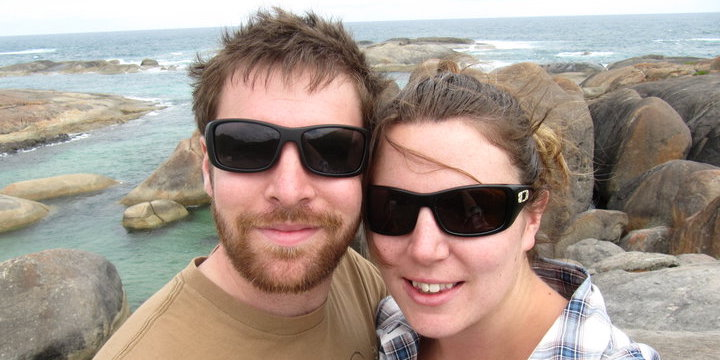
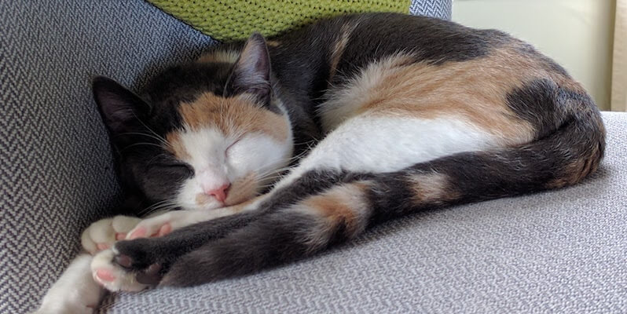

There were missed flights, falling off motorbikes, break-ins, and a trip to the moon.
Aww, where it all began. One summer day in a North West London beer garden. We talked about unicorns, and things, you know - standard stuff.
The North / South island bus tour. Steph skydived over fox glacier, John got a free beer for having a great ‘mo. A cold, dreary Dunedin morning stayed in our minds for some time.
Back to London. It sucked. 2 x GFC redundancy packages. Visited lots of Europe which was awesome. Amsterdam has the best apple pie ever! Slovenia is the best country.
6 months apart + many Skype chats later John rolled in to Perth. Saw an actual tumbleweed do its thing. The whitest sand beaches, ate the best pie, landed in many ditches. Fun.
It ws enivitable, Dad time, mum time, babies, cats were the call from afar. Squeezed in the Rugby world cup, and a 2,000 mile epic adventure around the UK.
Steph proposed. Sort of. Steve + Noni took 30mins to realise it wasn’t a joke. Much planning + many spreadsheets later we had planned the best party we’ve ever had.